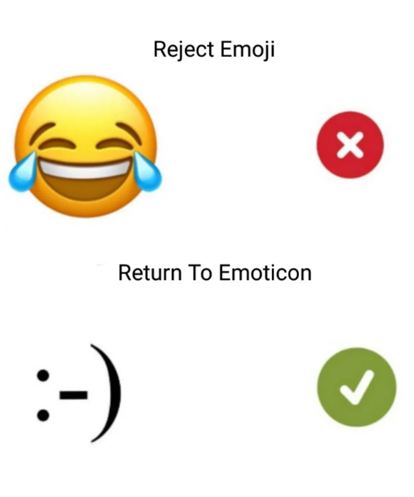

🤖 Full collection of Reddit emojis
Reddit is a site created in 2005 by Alexis Ohanian and Steve Huffman. The project works as a news aggregator that allows registered users to post links to current news. Messages popular among users go to the main page of the site by voting. Also, users can write posts on any topic. Each user has scores called “Karma”, which are earned by commenting on the posts of other users. And by voting, users can raise or lower the rating of other users.
Emojis on Reddit
Emojis on Reddit can be used in the same way as on other platforms to reinforce your point, express 🤣 Emotions and moods, give 🤗 Support,
👍 Approval or 👎 Judgment, etc.
But you need to use them carefully since Reddit users are divided into two clans fighting with
each other: those who constantly use emojis and those who hate and do not use various kinds of emoticons at all.
- “Googol” is a
📘 mathematical term whose contents include a unit with 100 zeros. This is where the company name comes from. - Google constantly rents
🐐 goats for one purpose which is mowing the lawn. In such a way, the company adheres to the green initiative. - Surprising fact is that the first Google
🖥 computer storage consisted of the Lego constructor.
Combinations and phrases
Tap / click to copy & paste
Emoji War: How Reddit Fights Emojis
 Fighting the use of emojis in Reddit posts
Users call this confrontation “War” and use all sorts of ways to bring victory to their clan. For example, those who don’t like emojis lower the rating of people who actively use them, and emoji lovers create more and more
emoticons-only messages. Also, emoji haters imprison emoji lovers in a kind of “Prison”: they write comments about it and post screenshots of the detainees’ posts in a special subreddit 👮 Emoji Police.
The
function of the “Prison” is to save all evidence of the redditor’s use of emojis and discuss his guilt in the comments. Interestingly, posts with screenshots of the detainees are not deleted, so it seems that active emoji users
remain imprisoned in an impromptu prison.
Interestingly, against the backdrop of the confrontation, Reddit has a small number of users who use kaomojis in messages. Apparently, Reddit users know how to choose a side
😉.
Interesting Facts:
- Many celebrities like Taylor Swift, Lady Gaga, Harry Styles, and others use emojis in their posts a lot;
- For the popular Twitter combination 🥺👉👈, which means shyness, indecision, or timidity, Reddit users have created their own playful designation. To them, this emoji stands for conquerors of food, money, and colonies;
- Over the years, Arnold Schwarzenegger, Alyssa Milano, Bill Gates, and other famous people have also participated in the Reddit Christmas promotion among site users;
Combinations and phrases
Tap / click to copy & paste
🤣 Smileys & Emotion

🤷 People & Body
🐼 Animals & Nature
🍕 Food & Drink
💯 Symbols
🌇 Travel & Places
📮 Objects
🎈 Activities
🇺🇸 Flags
🦰 Component


 🌚
🌚